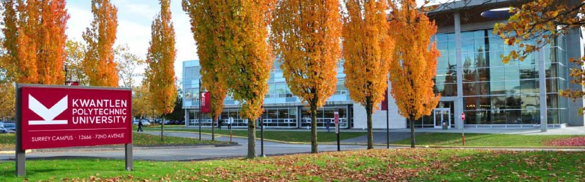

Kwantlen polytechnic university
Kwantlen Polytechnic University currently offers a range of credentials, many of which are completely unique, to successfully meet the evolving needs of regional and global employment markets. Students have the opportunity to bridge certificate and diploma credentials into bachelor's degrees, creating the option of academic and professional enhancement of applied and technical programs.
| KWANTLEN POLYTECHNIC UNIVERSITY | ||||
| Richmond | ||||
| Langley | ||||
| Surrey | ||||
| Civic Plaza | ||||
| Tech | ||||
| INTAKES | ||||
| September, January, May | ||||
| Program | Credential | Intake | Campus | Duration |
| Accounting: Bachelor of Business Administration | Bachelor Degree | January, May, September | KPU Richmond, Langley, Surrey, Civic Plaza | 4 Years |
| Accounting: Certificate | Certificate | January, May, September | KPU Richmond, Langley, Surrey, Civic Plaza | 1 Year |
| Accounting: Diploma | Diploma | January, May, September | KPU Richmond, Langley, Surrey, Civic Plaza | 2 Years |
| Anthropology | Bachelor Degree | January, May, September | KPU Langley, Richmond, Surrey | 4 Years |
| Anthropology Minor | Bachelor Degree | January, May, September | KPU Langley, Richmond, Surrey | 4 Years |
| Asian Studies | Bachelor Degree | January, May, September | KPU Langley, Richmond, Surrey | 4 Years |
| BBA in Entrepreneurial Leadership | Bachelor Degree | January, May, September | KPU Richmond, Surrey | 4 Years |
| Brewing and Brewery Operations | Diploma | September | KPU Langley | 2 Years |
| BSc: Major in Biology | Bachelor Degree | January, May, September | KPU Richmond, Surrey | 4 Years |
| BSc: Major in Health Science | Bachelor Degree | January, May, September | KPU Richmond, Surrey | 4 Years |
| Business Administration: Diploma | Diploma | January, May, September | KPU Langley, Richmond, Surrey | 2 Years |
| Business Management | Diploma | January, May, September | KPU Langley, Richmond, Surrey | 2 Years |
| Computer Information Systems | Diploma | January, May, September | KPU Surrey | 2 Years |
| Counselling | Bachelor Degree | January, May, September | KPU Richmond, Surrey | 4 Years |
| Economics | Bachelor Degree | January, May, September | KPU Langley, Richmond, Surrey | 4 Years |
| Education Assistant | Certificate | September | KPU Langley, Surrey | 1 Year |
| Environmental Protection Technology | Diploma | September | KPU Langley | 2 Years |
| Fashion Design & Technology | Bachelor Degree | September | KPU Richmond | 4 Years |
| Fashion Marketing | Diploma | September | KPU Richmond | 2 Years |
| Fine Arts | Bachelor Degree | January, May, September | KPU Surrey | 4 years |
| Fine Arts | Diploma | January, May, September | KPU Surrey | 2 years |
| Fine Arts | Certificate | January, May, September | KPU Surrey | 1 Year |
| Foundations in Design | Certificate | September | KPU Richmond | 1 Year |
| General Business Studies | Certificate | January, May, September | KPU Langley, Richmond, Surrey | 1 Year |
| General Science | Diploma | January, May, September | KPU Langley, Richmond, Surrey | 2 Years |
| General Science | Bachelor Degree | January, May, September | KPU Langley, Richmond, Surrey | 4 Years |
| General Studies | Bachelor Degree | January, May, September | KPU Langley, Richmond, Surrey | 4 Years |
| General Studies | Bachelor Degree | January, May, September | KPU Langley, Richmond, Surrey | 4 Years |
| General Studies | Diploma | January, May, September | KPU Langley, Richmond, Surrey | 2 Years |
| Geography Minor | Bachelor Degree | January, May, September | KPU Langley, Richmond, Surrey | 4 Years |
| Global Business Management | Post – Graduate | January, September | KPU Civic Plaza | 1 Year |
| Graduate Nurse – Internationally Educated | Certificate | January, September | KPU Langley | 1 Year |
| Graphic Design for Marketing | Bachelor Degree | September | KPU Richmond | 4 Years |
| Green Business Management and Sustainability | Post – Graduate | January, May, September | KPU Civic Plaza | 1 Year |
| Health Care Assistant | Certificate | January, September | KPU Langley | 1 Year |
| Health Unit Coordinator | Certificate | January, September | KPU Langley | 1 Year |
| History | Bachelor Degree | January, May, September | Kwantlen Polytechnic University | 4 Years |
| Human Resources Management | Bachelor Degree | January, May, September | KPU Surrey, Civic Plaza | 4 Years |
| Information Technology | Bachelor Degree | January, May, September | KPU Surrey | 4 Years |
| Interior Design | Bachelor Degree | September | KPU Richmond | 4 Years |
| Journalism | Bachelor Degree | January, May, September | KPU Langley, Richmond, Surrey | 4 Years |
| Legal Administrative Studies | Certificate | September | KPU Surrey | 1 Year |
| Marketing | Bachelor Degree | January, May, September | KPU Langley, Richmond, Surrey | 4 Years |
| Mathematics | Bachelor Degree | January, September | KPU Langley, Richmond, Surrey | 4 Years |
| Mechatronics & Advanced Manufacturing Technology | Diploma | September | KPU Tech | 2 Years |
| Music | Bachelor Degree | September | KPU Langley | 4 Years |
| Music | Bachelor Degree | September | KPU Langley | 4 Years |
| Music | Diploma | September | KPU Langley | 2 Years |
| Nursing | Bachelor Degree | January, September | KPU Langley | 4 Years |
| Philosophy | Bachelor Degree | January, May, September | KPU Langley, Richmond, Surrey | 4 Years |
| Plant Health | Bachelor Degree | January, May, September | KPU Langley | 4 Years |
| Political Science | Bachelor Degree | January, May, September | KPU Langley, Richmond, Surrey | 4 Years |
| Product Design | Bachelor Degree | September | KPU Richmond | 4 Years |
| Psychiatric Nursing | Bachelor Degree | May | KPU Langley | 4 Years |
| Psychology | Bachelor Degree | January, May, September | KPU Langley, Richmond, Surrey | 4 Years |
| Psychology – Applied: Bachelor of Science | Bachelor Degree | January, May, September | KPU Langley, Richmond, Surrey | 4 Years |
| Psychology: Associate of Arts Degree | Bachelor Degree | January, May, September | KPU Langley, Richmond, Surrey | 4 Years |
| Psychology: Bachelor of Arts Major | Bachelor Degree | January, May, September | KPU Langley, Richmond, Surrey | 4 Years |
| Public Relations | Diploma | September | KPU Richmond | 2 Years |
| Sustainable Agriculture | Bachelor Degree | January, May, September | KPU Richmond | 4 Years |
| Technical Apparel Design | Diploma | September | Kwantlen Polytechnic University | 2 Years |
| Traditional Chinese Medicine – Acupuncture | Diploma | September | KPU Richmond | 3 Years |
| Urban Ecosystems | Bachelor Degree | January, May, September | KPU Langley | 4 Years |